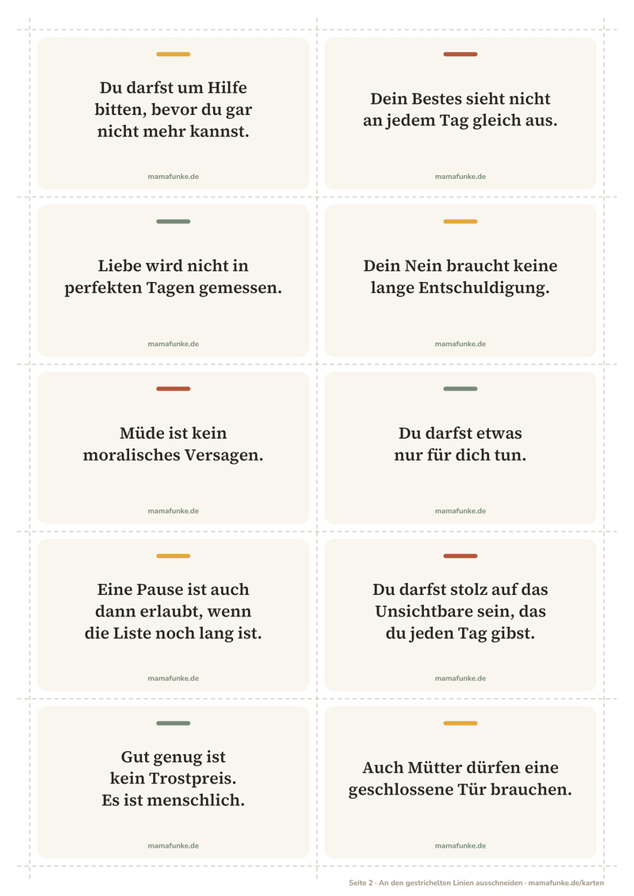

30 Affirmationskarten für Mütter zum Ausdrucken (kostenlos)
Manchmal hilft ein einziger freundlicher Satz, genau in dem Moment, in dem dein Kopf voll ist. Deshalb haben wir 30 ehrliche Sätze für Mamas auf kleine Karten gebracht: über Mental Load, Müdigkeit, schlechtes Gewissen, Grenzen und kleine Freuden. Ausdrucken, ausschneiden, hinlegen, wo dein Blick ohnehin hinfällt.

Wo die Karten hinkommen
- An den KühlschrankMit einem Magneten hängt dein Satz der Woche dort, wo du zehnmal am Tag vorbeikommst. Tausche ihn, wenn er dir nicht mehr auffällt.
- An den SpiegelMorgens beim Zähneputzen bleibt kurz Zeit für einen Satz. Ein Streifen Klebeband reicht, und schon beginnt der Tag etwas freundlicher.
- In die BrotdoseLeg eine Karte in deine eigene Brotdose oder Tasche, für die Mittagspause im Büro oder das Warten auf dem Spielplatz. Ein kleiner Gruß von dir an dich.
Alle 30 Sätze ansehen
- Du darfst um Hilfe bitten, bevor du gar nicht mehr kannst.
- Dein Bestes sieht nicht an jedem Tag gleich aus.
- Liebe wird nicht in perfekten Tagen gemessen.
- Dein Nein braucht keine lange Entschuldigung.
- Müde ist kein moralisches Versagen.
- Du darfst etwas nur für dich tun.
- Eine Pause ist auch dann erlaubt, wenn die Liste noch lang ist.
- Du darfst stolz auf das Unsichtbare sein, das du jeden Tag gibst.
- Gut genug ist kein Trostpreis. Es ist menschlich.
- Auch Mütter dürfen eine geschlossene Tür brauchen.
- Das Nötigste ist heute genug.
- Freude braucht keine Rechtfertigung.
- Du musst den Tag nicht retten. Du darfst ihn vereinfachen.
- Auch du verdienst die Geduld, die du so oft verschenkst.
- Dein Nein löscht deine Liebe nicht aus.
- Ein Bedürfnis wird nicht unwichtig, nur weil es deins ist.
- Die Wäsche kann warten. Dein Körper zählt.
- Du bist mehr als deine Zuständigkeiten.
- Heute reicht eine Sache nach der anderen.
- Deine Müdigkeit ist kein Charakterfehler.
- Ein schwerer Moment macht dich nicht zu einer schlechten Mutter.
- Grenzen schützen auch die Wärme dahinter.
- Du darfst früher aufhören.
- Ein schöner Moment darf einfach schön sein.
- Dein Wert wächst nicht mit der Zahl erledigter Aufgaben.
- Heute darfst du auf deiner eigenen Seite stehen.
- Du bist nicht schuldig, weil du eine Pause brauchst.
- Ruhe ist ein Bedürfnis, kein Luxus.
- Ruhe zählt auch in kleinen Portionen.
- Dein eigenes Licht ist weiterhin da.
260 ehrliche Sätze für Mütter, kostenlos in der App
Mit der App MamaFunke begegnet dir jeden Tag ein kurzer, ehrlicher Satz direkt als Widget auf deinem Startbildschirm. Ganz ohne Ausdrucken, ohne Konto und ohne Werbung.
Wie voll ist dein Kopf gerade? Finde es in einer Minute heraus mit unserem Mental-Load-Test für Mamas. Mehr zu ehrlichen Sätzen und wie sie im Alltag wirken, liest du im Ratgeber Affirmationen für Mütter.
Die Karten sind für den privaten Gebrauch gedacht. Wenn du dich über längere Zeit erschöpft, leer oder hoffnungslos fühlst, sprich mit deiner Hebamme, deiner Ärztin oder deinem Arzt. Die TelefonSeelsorge ist rund um die Uhr kostenlos und anonym erreichbar unter 0800 1110111 oder 116 123. In akuter Gefahr wähle den Notruf 112.